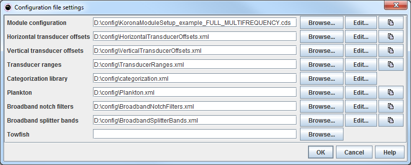

The config file settings is a set of config files defining a processing setup. The module configuration specifies the setup of modules, while the other files contain additional configuration referenced by certain modules.
The name of a configuration settings file normally ends with the suffix .cfs.

The files listed are:
Clicking the Edit... button will for each file bring up an editor with the contents of the config file.